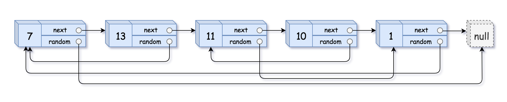

138. 随机链表的复制
题目与约束
给你一个长度为 n 的链表，每个节点包含一个额外增加的随机指针 random ，该指针可以指向链表中的任何节点或空节点。
构造这个链表的 深拷贝。 深拷贝应该正好由 n 个 全新 节点组成，其中每个新节点的值都设为其对应的原节点的值。新节点的 next 指针和 random 指针也都应指向复制链表中的新节点，并使原链表和复制链表中的这些指针能够表示相同的链表状态。复制链表中的指针都不应指向原链表中的节点。
例如，如果原链表中有 X 和 Y 两个节点，其中 X.random --> Y 。那么在复制链表中对应的两个节点 x 和 y ，同样有 x.random --> y 。
返回复制链表的头节点。
用一个由 n 个节点组成的链表来表示输入/输出中的链表。每个节点用一个 [val, random_index] 表示：
val：一个表示Node.val的整数。random_index：随机指针指向的节点索引（范围从0到n-1）；如果不指向任何节点，则为null。
你的代码 只 接受原链表的头节点 head 作为传入参数。
示例 1：

输入：head = [[7,null],[13,0],[11,4],[10,2],[1,0]]
输出：[[7,null],[13,0],[11,4],[10,2],[1,0]]
示例 2：

输入：head = [[1,1],[2,1]]
输出：[[1,1],[2,1]]
示例 3：

输入：head = [[3,null],[3,0],[3,null]]
输出：[[3,null],[3,0],[3,null]]
提示：
0 <= n <= 1000-104 <= Node.val <= 104Node.random为null或指向链表中的节点。
Java 完整推导
Java 核心不变量
复制节点紧跟原节点，random 可由 original.random.next 得到。
完整推导
思路推导
-
直觉与痛点（哈希表映射法）：
深拷贝最头疼的是
random指针。当你在复制节点 A 的时候，它的random可能指向节点 C，但此时节点 C 还没有被创建出来！常规解法：用一个
HashMap<Node, Node>。第一遍遍历，只根据原节点创建新节点，并全存进 Map 里（原节点当 Key，新节点当 Value）。第二遍遍历，利用 Map 去查出对应的新节点，连上next和random。痛点：空间复杂度是 O(N)，对于面试要求来说不够惊艳。
-
破局思路（原地克隆交织法）：
能不能不用 HashMap 也能记住“谁是谁的克隆体”？
答案是：把克隆体直接绑在本体的后面！
如果把原链表 变成 。
此时，本体和克隆体的物理位置是绑定的。A 的克隆体永远是 A.next！
-
逻辑推演（极度舒适的三步曲）：
-
第一步：克隆并交织（分裂）。遍历链表，在每个节点后面插入一个它的克隆节点。
-
第二步：分配
random指针。这是最巧妙的一步。克隆体 的random应该指向哪里？它应该指向本体 A 的random的克隆体！
公式化表述：
A'.random = A.random.next。- 第三步：拆分链表（提取）。将这个交织的链表一分为二，把本体和克隆体拆开。把克隆体串成一个新链表返回，同时务必把原链表恢复原状。
Java 实现（O(1) 空间满分版）
-
/*
// Definition for a Node.
class Node {
int val;
Node next;
Node random;
public Node(int val) {
this.val = val;
this.next = null;
this.random = null;
}
}
*/
class Solution {
public Node copyRandomList(Node head) {
if (head == null) {
return null;
}
// 1. 第一步：克隆节点，并将其插入到原节点之后
// 原链表：A -> B -> C
// 现链表：A -> A' -> B -> B' -> C -> C'
Node curr = head;
while (curr != null) {
Node clone = new Node(curr.val);
clone.next = curr.next;
curr.next = clone;
curr = clone.next;
}
// 2. 第二步：设置克隆节点的 random 指针
curr = head;
while (curr != null) {
if (curr.random != null) {
// 克隆节点的 random 就是原节点 random 的下一个节点（即克隆体）
curr.next.random = curr.random.next;
}
// 每次跳两步，跳到下一个原节点
curr = curr.next.next;
}
// 3. 第三步：拆分链表，将新旧链表分离，并恢复原链表结构
curr = head;
Node cloneHead = head.next; // 克隆链表的头节点
while (curr != null) {
Node clone = curr.next;
// 恢复原链表的 next 指针
curr.next = clone.next;
// 串联克隆链表的 next 指针（注意判断是否到了末尾）
clone.next = (clone.next != null) ? clone.next.next : null;
// 指针推进
curr = curr.next;
}
return cloneHead;
}
}
复杂度
- 时间复杂度：O(N)。我们一共遍历了原链表 3 次（克隆、分配随机指针、拆分），每次都是线性时间，总时间依然是 O(N)。
- 空间复杂度：O(1)。除了作为结果返回的 N 个新节点外，我们只使用了几个常数级别的指针变量，没有借用任何哈希表结构。
- 致命踩坑：不要把原链表弄坏了！
在第三步“拆分链表”时，很多同学光顾着把 A' -> B' -> C' 串联起来，却忘记了让 A -> B -> C 恢复原样（比如把 A.next 置为了 null）。在工程开发中，改变传入的原始数据结构是非常危险的操作。 如果你能在写代码时主动向面试官解释：“我在最后一步不仅提取了深拷贝的链表，还特意将原链表完好无损地恢复了”，这绝对是极大的工程素养加分项！
Python 完整推导
把每个复制节点插在原节点后面
原链 A→B→C 在复制后变成 A→A'→B→B'→C→C'。这样原节点 r 的复制体 r' 永远是 r.next，不需要额外的原节点到副本映射表。
第一趟插入全部复制节点；第二趟通过 original.random.next 连接复制体的 random；第三趟把交错链拆开，并恢复原链。
用 A、B、C、D、E 走一遍
原链为 A→B→C→D→E，复制体记作 A' 到 E'。
- 第一趟后：A→A'→B→B'→C→C'→D→D'→E→E'。
- 若 B.random=A，则 B'.random=A.next=A'。
- 若 C.random=E，则 C'.random=E.next=E'。
- A.random 为空，因此 A'.random 保持空。
第三趟把 A'→B'→C'→D'→E' 串成新链，同时把原链恢复成 A→B→C→D→E。
Python 实现
参考来源：灵茶山艾府题解（MIT License）
沿用旧来源的交错复制思路；旧 Python 拆分时未恢复原链，主代码按同题 Java 三趟拆分法改写了这一段。
from typing import Optional
# Node 由力扣提供。
class Solution:
def copyRandomList(self, head: Optional[Node]) -> Optional[Node]:
original = head
while original:
copied = Node(original.val)
copied.next = original.next
original.next = copied
original = copied.next
original = head
while original:
if original.random:
original.next.random = original.random.next
original = original.next.next
dummy = Node(0)
copied_tail = dummy
original = head
while original:
copied = original.next
original.next = copied.next
copied_tail.next = copied
copied_tail = copied
original = original.next
return dummy.next
第二趟只访问原节点
original 每次执行 original.next.next，恰好跳过一个复制节点。只有 original.random 非空时才读取它的 next，因为目标必须是目标副本，而不是原目标节点。
目标副本与原节点要分清
若问题中 C 的 random 指向 E，原链里的 E 已经存在，但对应的副本 E' 在复制阶段才创建。交错结构让 E' 等于 E.next，因此 C'.random=E.next。这里连接的是副本链，不是把 C' 指回原节点 E。
第三趟负责两件事
先保存 copied=original.next，再令 original.next=copied.next 恢复原链下一条原节点；随后把 copied 接到 dummy 尾部，串出新链。两件事缺一不可。
空链表与空 random
head 为空时不进入任何遍历，返回 dummy.next=None。random 为空时复制节点的 random 未被赋值，仍为 Node 构造后的空值。
复杂度
- 时间复杂度：
O(n)。 - 空间复杂度：
O(1)（不计新建的输出节点）。
三趟都只沿 n 个原节点前进一次；新增复制节点是题目输出，额外工作引用为常数。
力扣原题
C++ 实现
实现来源：灵茶山艾府题解（MIT License）
class Solution {
public:
Node* copyRandomList(Node* head) {
// 复制每个节点，把新节点直接插到原节点的后面
for (Node* cur = head; cur; cur = cur->next->next) {
cur->next = new Node(cur->val, cur->next, nullptr);
}
// 遍历交错链表中的原链表节点
for (Node* cur = head; cur; cur = cur->next->next) {
if (cur->random) {
// 要复制的 random 是 cur->random 的下一个节点
cur->next->random = cur->random->next;
}
}
// 把交错链表分离成两个链表
Node dummy(0);
Node* tail = &dummy;
for (Node* cur = head; cur; cur = cur->next, tail = tail->next) {
Node* copy = cur->next; // 新节点
tail->next = copy; // 把新节点插在 tail 的后面，构建新的链表
cur->next = copy->next; // 恢复原节点的 next
}
return dummy.next;
}
};
Go 实现
实现来源：灵茶山艾府题解（MIT License）
func copyRandomList(head *Node) *Node {
// 复制每个节点，把新节点直接插到原节点的后面
for cur := head; cur != nil; cur = cur.Next.Next {
cur.Next = &Node{Val: cur.Val, Next: cur.Next}
}
// 遍历交错链表中的原链表节点
for cur := head; cur != nil; cur = cur.Next.Next {
if cur.Random != nil {
// 要复制的 random 是 cur.Random 的下一个节点
cur.Next.Random = cur.Random.Next
}
}
// 把交错链表分离成两个链表
dummy := Node{}
tail := &dummy
for cur := head; cur != nil; cur, tail = cur.Next, tail.Next {
clone := cur.Next // 新节点
tail.Next = clone // 把新节点插在 tail 的后面，构建新的链表
cur.Next = clone.Next // 恢复原节点的 next
}
return dummy.Next
}
C 实现
实现来源：灵茶山艾府题解（MIT License）
struct Node* copyRandomList(struct Node* head) {
// 复制每个节点，把新节点直接插到原节点的后面
for (struct Node* cur = head; cur; cur = cur->next->next) {
struct Node* copy = malloc(sizeof(struct Node));
copy->val = cur->val;
copy->next = cur->next;
copy->random = NULL;
cur->next = copy;
}
// 遍历交错链表中的原链表节点
for (struct Node* cur = head; cur; cur = cur->next->next) {
if (cur->random) {
// 要复制的 random 是 cur->random 的下一个节点
cur->next->random = cur->random->next;
}
}
// 把交错链表分离成两个链表
struct Node dummy;
struct Node* tail = &dummy;
for (struct Node* cur = head; cur; cur = cur->next, tail = tail->next) {
struct Node* copy = cur->next; // 新节点
tail->next = copy; // 把新节点插在 tail 的后面，构建新的链表
cur->next = copy->next; // 恢复原节点的 next
}
return dummy.next;
}